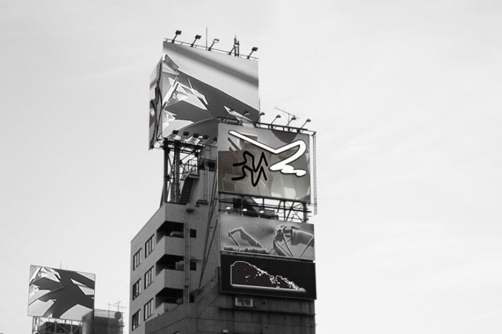
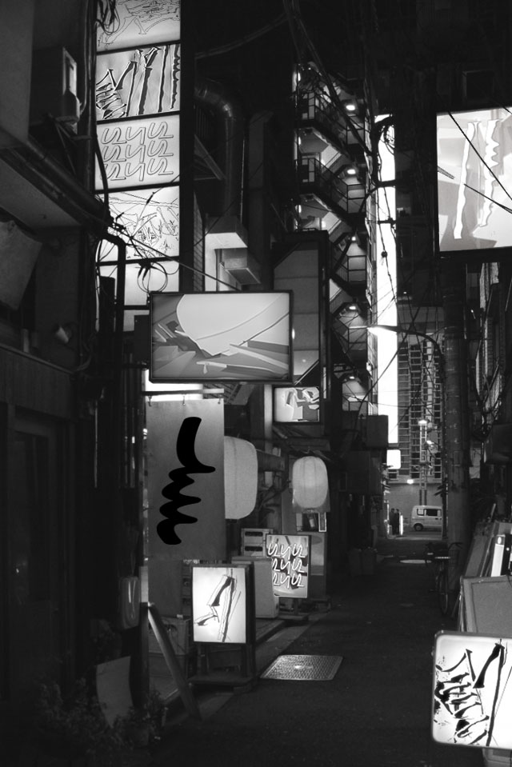
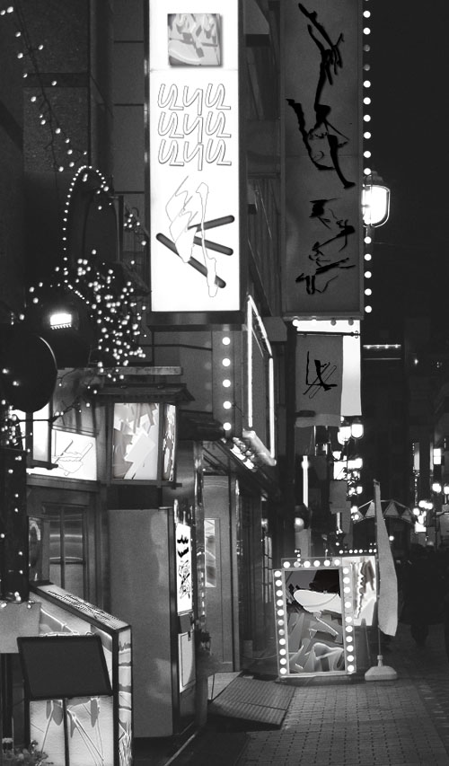
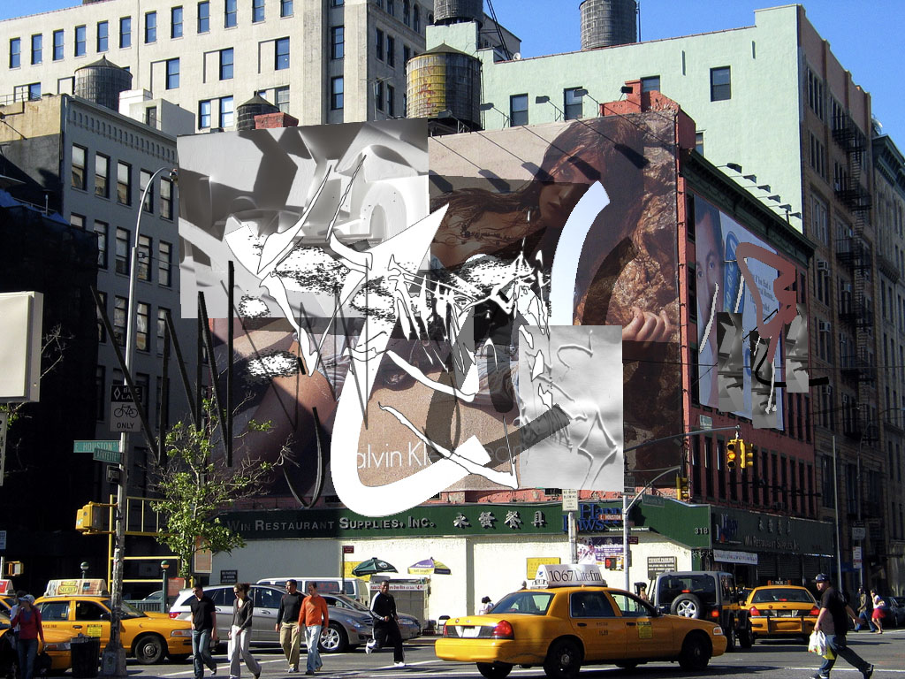
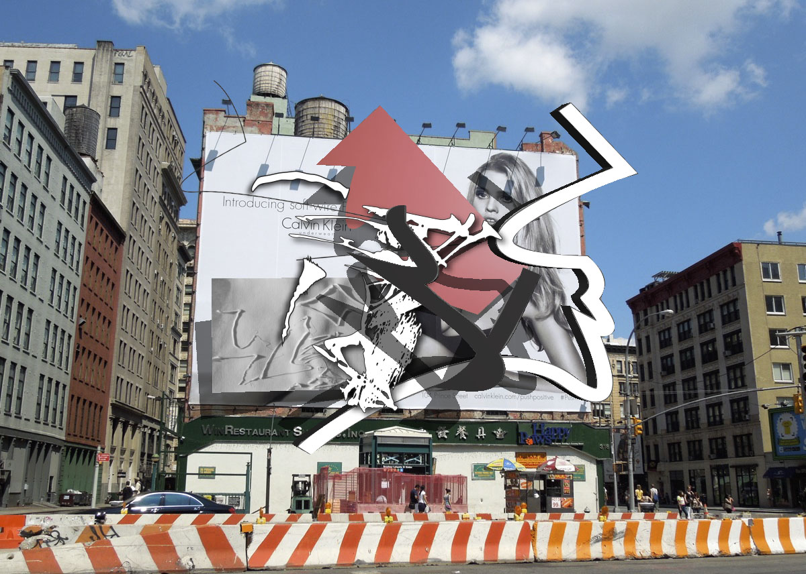

The second application was a direct result of my interest in pushing the formal relationships that were developing into physical space. I started with a series of photos by Nicolas Damiens in which he had removed all advertisments from photos he had taken in tokyo. After completing the three b & w compositions, I realized that it would make sense to try and simulate the effects of augmented reality into a larger working space.

